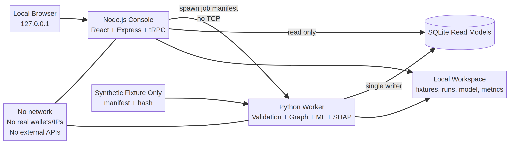

From raw synthetic transaction records to an explainable visual trail for human review.
A safer way to demonstrate investigation intelligence—without real wallets, IPs, or identities.

The model is the brain. The product is the visual workflow: identify, explain, connect, and review.